Piezas de carrocería para Toyota en Panamá
530 piezas disponibles hoy, cada una con su foto y su código: parrillas (87), faros y lámparas delanteras (62), lámparas traseras (46), defensas traseras (35).
- Garantía de 3 días
- Foto real de cada pieza
- Efectivo, Yappy o ACH
- Lunes a sábado, 8:00 a. m. a 5:00 p. m.
Por modelo
Parrillas para Toyota 87
 534Hiace2015 · original
534Hiace2015 · original 535Hiace2015 · genérico
535Hiace2015 · genérico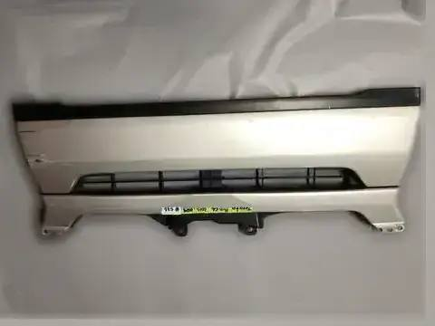
536Hiace2015 · original 537Land Cruiser2016-21 · original
537Land Cruiser2016-21 · original 5384Runner2014-2019 · original
5384Runner2014-2019 · original 539Yaris Cross2025 · original
539Yaris Cross2025 · original 540RAV42019-25 · original
540RAV42019-25 · original 541Land Cruiser2016-21 · original
541Land Cruiser2016-21 · original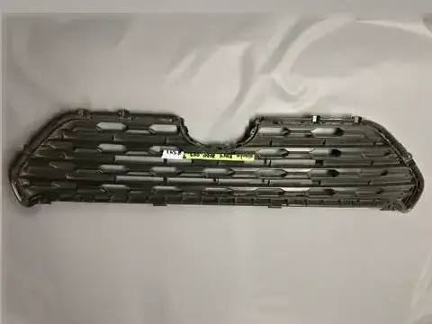
542RAV42019-25 · original 543Hilux2012-15 · original
543Hilux2012-15 · original 544RAV42019-25 · genérico nuevo
544RAV42019-25 · genérico nuevo 545Corolla2008-10 · genérico nuevo
545Corolla2008-10 · genérico nuevo 546Hilux2009-11 · original
546Hilux2009-11 · original 547Hilux2009-11 · original
547Hilux2009-11 · original 548Fortuner2016-20 · original
548Fortuner2016-20 · original 549Hilux2012-15 · genérico
549Hilux2012-15 · genérico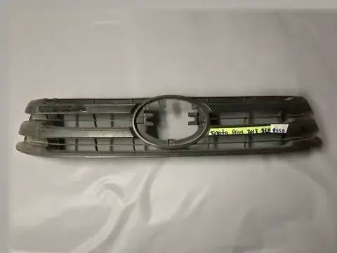
550Hilux2012-15 · genérico 551Yaris Sedan2023-26 · original
551Yaris Sedan2023-26 · original 552Innova / Fortuner2016-20 · original553Land Cruiser2016-21 · original
552Innova / Fortuner2016-20 · original553Land Cruiser2016-21 · original 561Yaris2018-22 · original
561Yaris2018-22 · original 562Yaris2018-22 · original
562Yaris2018-22 · original 563Yaris2018-22 · original564Hilux2012-15 · original
563Yaris2018-22 · original564Hilux2012-15 · original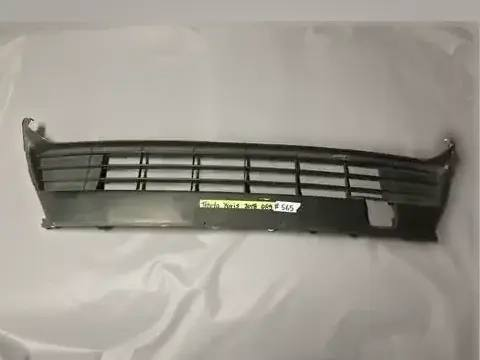
565Yaris2018-22 · original 566Hilux2012-15 · genérico nuevo
566Hilux2012-15 · genérico nuevo 567Hilux2016-2021 · original nuevo
567Hilux2016-2021 · original nuevo 568Hilux2012-15 · original
568Hilux2012-15 · original 569Hilux2012-15 · original
569Hilux2012-15 · original 570Hilux2012-15 · original
570Hilux2012-15 · original 571Corolla2014-16 · genérico nuevo
571Corolla2014-16 · genérico nuevo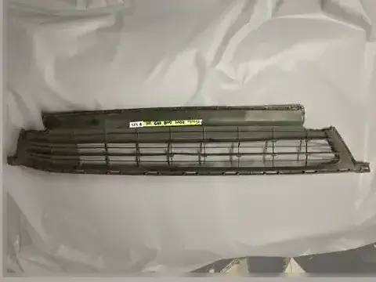
573RAV42016-18 · original 574RAV42016-18 · original
574RAV42016-18 · original 575Hiace2015 · original nuevo
575Hiace2015 · original nuevo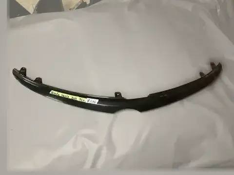
576Yaris2014-17 · genérico 577Yaris2014-17 · original
577Yaris2014-17 · original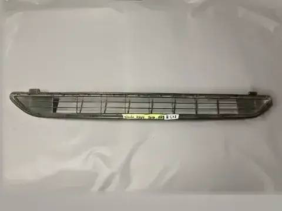
578RAV42016-18 · original 579RAV42016-18 · original
579RAV42016-18 · original 580RAV42016-18 · genérico nuevo
580RAV42016-18 · genérico nuevo 581RAV42016-18 · genérico nuevo
581RAV42016-18 · genérico nuevo 582Prado 2014-172014-2017 · original nuevo
582Prado 2014-172014-2017 · original nuevo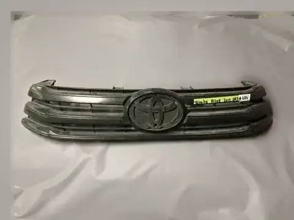
583Hilux2016-20 · original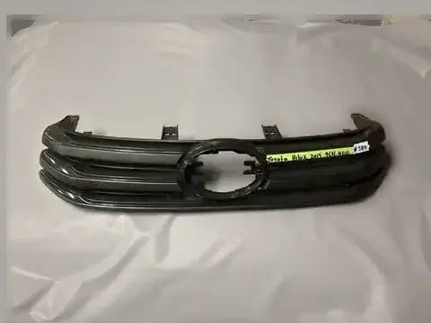
584Hilux2012-15 · genérico nuevo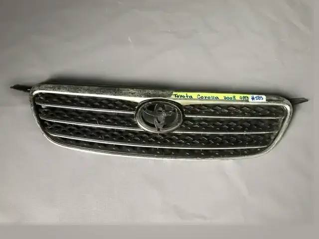
585Corolla2008-10 · original 586Hilux Vigo2012-15
586Hilux Vigo2012-15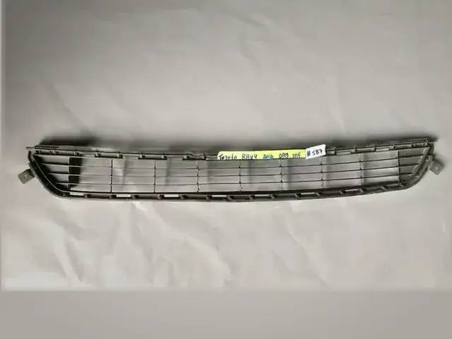
587RAV42016-18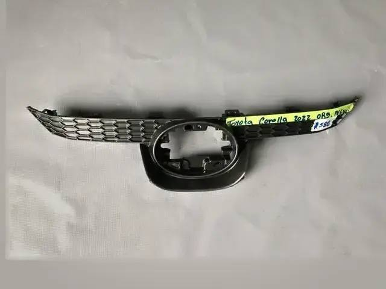
588Corolla2020-22 · original nuevo 5894Runner2010-13
5894Runner2010-13 5904Runner2014-24 · original
5904Runner2014-24 · original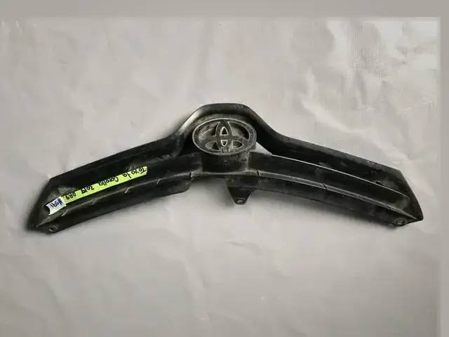
591Corolla2017-19 · original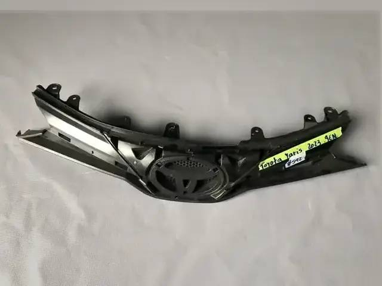
592Yaris2023-26 · genérico 594Yaris2018-22 · original
594Yaris2018-22 · original 595Corolla2016-19 · original
595Corolla2016-19 · original 596Corolla2014-16 · genérico
596Corolla2014-16 · genérico 597Corolla2014-16 · original
597Corolla2014-16 · original 598Yaris2018-22 · original
598Yaris2018-22 · original 600Corolla2017-19 · original
600Corolla2017-19 · original 601Corolla2017-19 · original
601Corolla2017-19 · original 602Yaris2018-22 · original
602Yaris2018-22 · original 603RAV42016-18 · genérico
603RAV42016-18 · genérico 604RAV42016-18 · original
604RAV42016-18 · original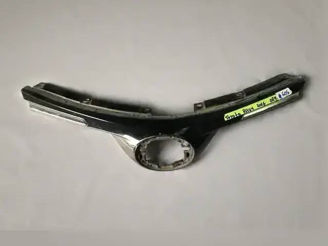
605RAV42016-18 · original 606Yaris2018-22 · original
606Yaris2018-22 · original 607Yaris2018-22 · original
607Yaris2018-22 · original 608Fortuner2020-24 · original
608Fortuner2020-24 · original 609Hilux SW42016-17
609Hilux SW42016-17 647Hilux2012-15 · original
647Hilux2012-15 · original 844RAV42019-25 · original
844RAV42019-25 · original 845RAV42019-25 · original
845RAV42019-25 · original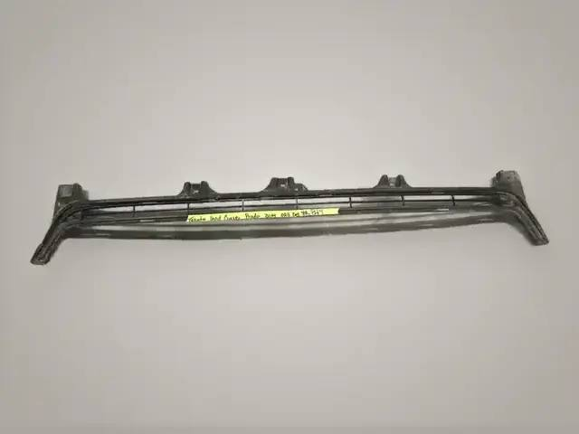
874Land Cruiser Prado2014-17 · original 875Prado2010-2015 · original
875Prado2010-2015 · original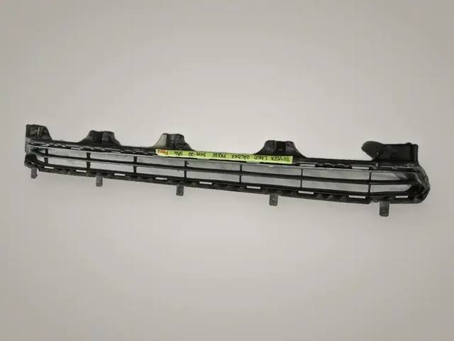
P002Land Cruiser Prado2018-2023 · original P008Rush2018-26
P008Rush2018-26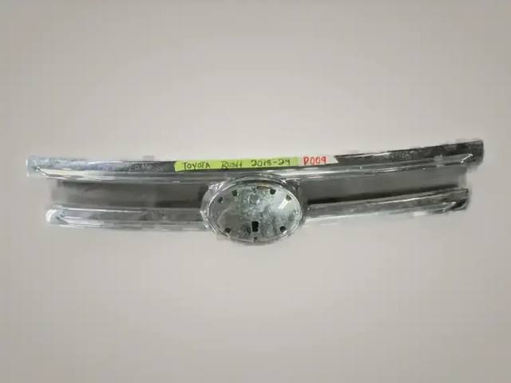
P009Rush2018-26 P010Hilux2016-23 · original
P010Hilux2016-23 · original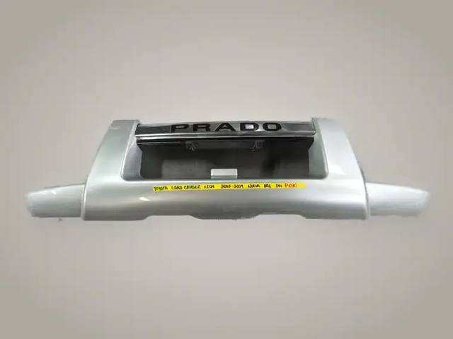
P030Land Cruiser FJ1202002-09 · original nuevo P031Yaris2018-22 · original
P031Yaris2018-22 · original P032Yaris2018-22 · original
P032Yaris2018-22 · original P033Yaris2018-22 · original nuevo
P033Yaris2018-22 · original nuevo P034Yaris2017-22 · genérico
P034Yaris2017-22 · genérico P035Yaris2017-22 · genérico nuevo
P035Yaris2017-22 · genérico nuevo P036Yaris2018-22 · genérico nuevo
P036Yaris2018-22 · genérico nuevo P037Yaris2018-22 · genérico nuevo
P037Yaris2018-22 · genérico nuevo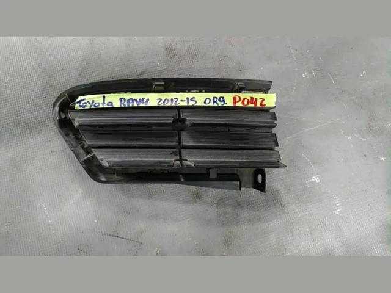
P042RAV42012-15 · original P043Hilux2016-24 · original
P043Hilux2016-24 · original P046Yaris2018-23 · original
P046Yaris2018-23 · original P051RAV42016-18
P051RAV42016-18Faros y lámparas delanteras para Toyota 62
 123Hilux Revo2021-26 · lado derecho · original
123Hilux Revo2021-26 · lado derecho · original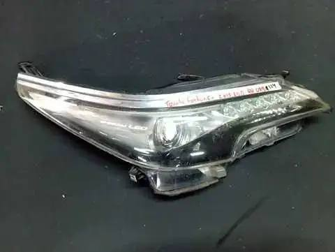
124Fortuner2016-20 · lado derecho · original 125Dyna2005 · lado izquierdo · original
125Dyna2005 · lado izquierdo · original 126Prado2014-17 · genérico
126Prado2014-17 · genérico 127Fortuner2012-17 · lado derecho · original
127Fortuner2012-17 · lado derecho · original 128Rush2018-26 · lado izquierdo · original
128Rush2018-26 · lado izquierdo · original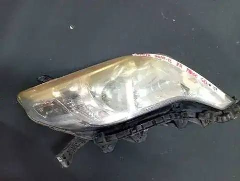
129Prado2014-17 · lado derecho · genérico 130Land Cruiser2008-11 · lado derecho · original1314Runner2014-24 · lado derecho · original
130Land Cruiser2008-11 · lado derecho · original1314Runner2014-24 · lado derecho · original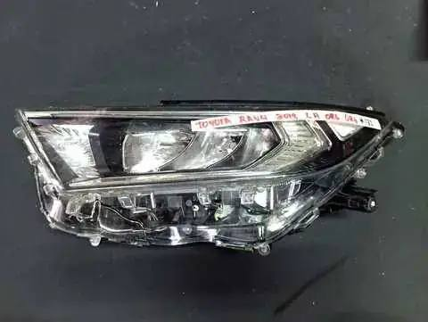
132RAV42019-22 · lado izquierdo · original 134Hilux2008-11 · lado derecho · genérico
134Hilux2008-11 · lado derecho · genérico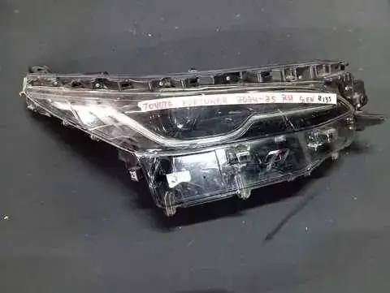
135Fortuner2021-26 · lado derecho · genérico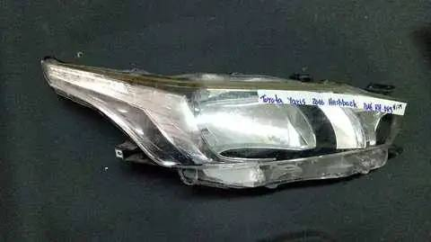
139Yaris2014-17 · lado derecho · original 141Corolla2019-24 · lado izquierdo · original
141Corolla2019-24 · lado izquierdo · original 143RAV42013-15 · lado derecho · original
143RAV42013-15 · lado derecho · original 144Yaris2023-26 · lado izquierdo · original
144Yaris2023-26 · lado izquierdo · original 146Prado2014-17 · lado izquierdo · original
146Prado2014-17 · lado izquierdo · original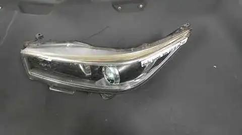
147Innova (led)2024 · lado izquierdo · original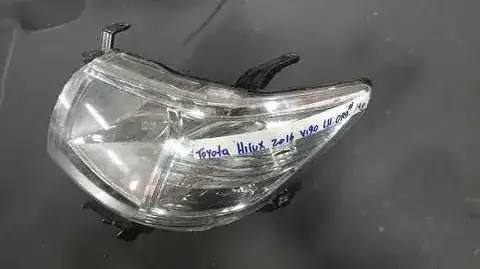
148Hilux Vigo2016-17 · lado izquierdo · original 152Yaris2014-17 · lado derecho · original
152Yaris2014-17 · lado derecho · original 153Yaris Sedan2014-17 · lado izquierdo · genérico
153Yaris Sedan2014-17 · lado izquierdo · genérico 154Hilux (led)2021-26 · lado izquierdo · original
154Hilux (led)2021-26 · lado izquierdo · original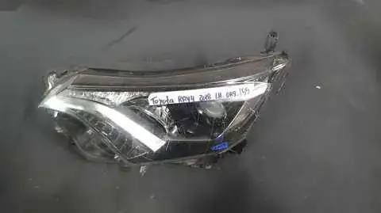
155RAV42016-18 · lado izquierdo · original 156Corolla2017-19 · lado derecho · genérico
156Corolla2017-19 · lado derecho · genérico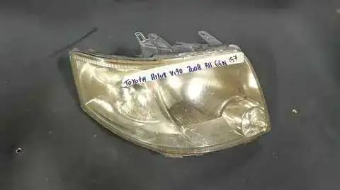
157Hilux Vigo2005-08 · lado derecho · genérico 158RAV42009-12 · lado izquierdo · original
158RAV42009-12 · lado izquierdo · original 159Yaris Hatchback2018-22 · lado derecho · original
159Yaris Hatchback2018-22 · lado derecho · original 160Yaris2014-17 · lado derecho · genérico
160Yaris2014-17 · lado derecho · genérico 161Hilux Vigo2009-11 · lado izquierdo · original
161Hilux Vigo2009-11 · lado izquierdo · original 162Hilux Vigo2009-11 · lado derecho · original
162Hilux Vigo2009-11 · lado derecho · original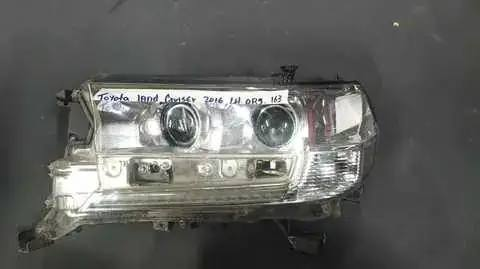
163Land Cruiser2016-21 · lado izquierdo · original 164Hilux Revo2018-20 · lado izquierdo · original
164Hilux Revo2018-20 · lado izquierdo · original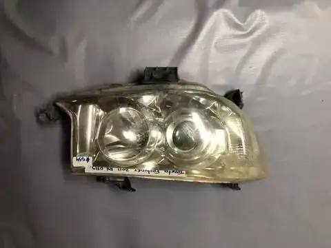
554Fortuner2009-11 · lado derecho · original 555Fortuner2009-11 · lado izquierdo · genérico
555Fortuner2009-11 · lado izquierdo · genérico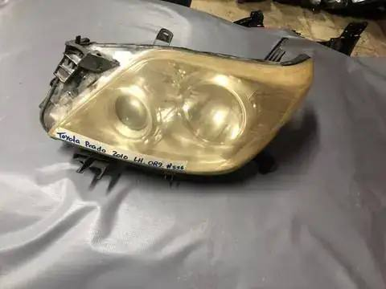
556Prado2010-13 · lado izquierdo · original 557Prado2010-13 · lado derecho · original
557Prado2010-13 · lado derecho · original 860Tundra2024 · lado izquierdo · original
860Tundra2024 · lado izquierdo · original LD001Prado2014-2017 · lado derecho · original
LD001Prado2014-2017 · lado derecho · original LD002Prado2014-2017 · lado izquierdo · original
LD002Prado2014-2017 · lado izquierdo · original LD006RAV42013-2015 · lado derecho · original
LD006RAV42013-2015 · lado derecho · original LD007RAV42013-2015 · lado izquierdo · original
LD007RAV42013-2015 · lado izquierdo · original LD017RAV42016-18 · lado derecho · original
LD017RAV42016-18 · lado derecho · original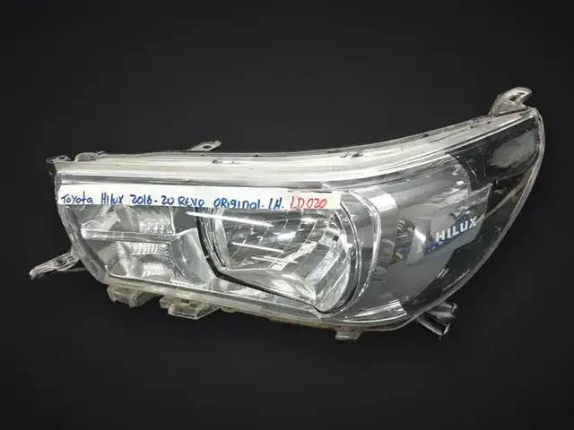
LD020Hilux Revo2016-20 · lado izquierdo · original LD0214Runner2014-24 · lado derecho · original
LD0214Runner2014-24 · lado derecho · original LD027Land Cruiser2003-08 · lado derecho · genérico nuevo
LD027Land Cruiser2003-08 · lado derecho · genérico nuevo LD026Corolla2014-16 · lado derecho · original
LD026Corolla2014-16 · lado derecho · original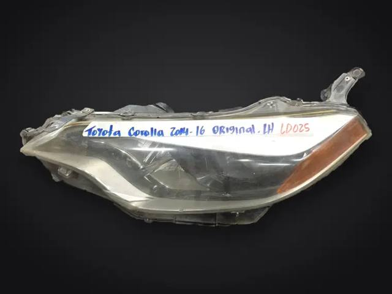
LD025Corolla2014-16 · lado izquierdo · original LD024Yaris2006-13 · lado izquierdo · genérico nuevo
LD024Yaris2006-13 · lado izquierdo · genérico nuevo LD022Yaris Echo2001-03 · lado derecho · genérico nuevo
LD022Yaris Echo2001-03 · lado derecho · genérico nuevo LD041Corolla1993-97 · lado derecho · genérico nuevo
LD041Corolla1993-97 · lado derecho · genérico nuevo LD042Corolla1993-97 · lado derecho · genérico nuevo
LD042Corolla1993-97 · lado derecho · genérico nuevo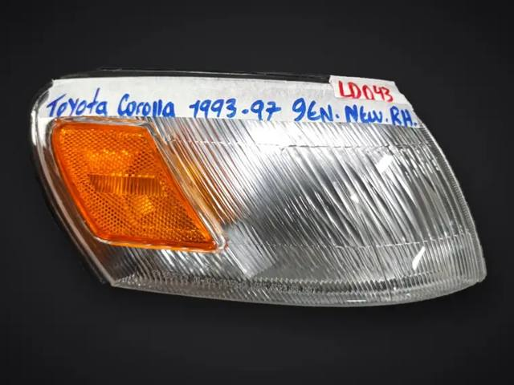
LD043Corolla1993-97 · lado derecho · genérico nuevo LD044Corolla1993-97 · lado izquierdo · genérico nuevo
LD044Corolla1993-97 · lado izquierdo · genérico nuevo LD045Corolla1993-97 · lado izquierdo · genérico nuevo
LD045Corolla1993-97 · lado izquierdo · genérico nuevo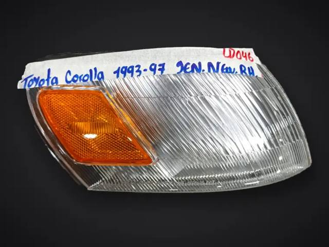
LD046Corolla1993-97 · lado derecho · genérico nuevo LD047Camry1997-99 · lado derecho · genérico nuevo
LD047Camry1997-99 · lado derecho · genérico nuevo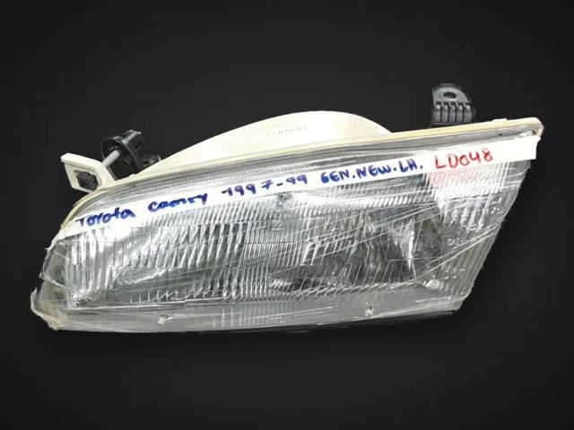
LD048Camry1997-99 · lado izquierdo · genérico nuevo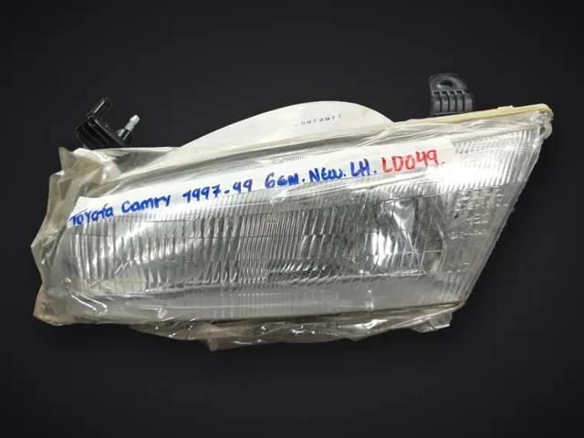
LD049Camry1997-99 · lado izquierdo · genérico nuevo LD050Camry1997-99 · lado derecho · genérico nuevo
LD050Camry1997-99 · lado derecho · genérico nuevo LD051Camry1997-99 · lado izquierdo · genérico nuevo
LD051Camry1997-99 · lado izquierdo · genérico nuevo LD053RAV42019-23 · lado derecho · original
LD053RAV42019-23 · lado derecho · original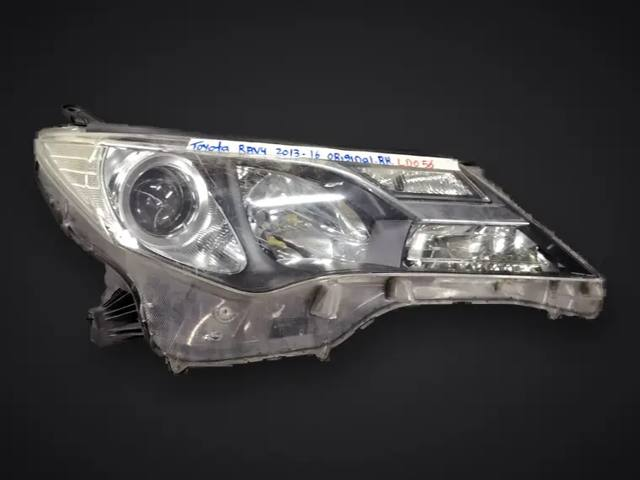
LD056RAV42013-16 · lado derecho · originalLámparas traseras para Toyota 46
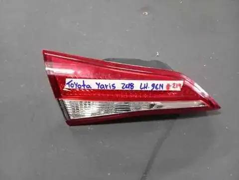
219Yaris2018-22 · lado izquierdo · genérico 220Hilux2009-11 · lado izquierdo · original
220Hilux2009-11 · lado izquierdo · original 221Hiace2007 · lado izquierdo · genérico
221Hiace2007 · lado izquierdo · genérico 222Land Cruiser2012-15 · lado izquierdo · original
222Land Cruiser2012-15 · lado izquierdo · original 223Prado2010-13 · lado izquierdo · original
223Prado2010-13 · lado izquierdo · original 224Prado2010-13 · lado derecho · original
224Prado2010-13 · lado derecho · original 225Land Cruiser2012-15 · lado izquierdo · genérico
225Land Cruiser2012-15 · lado izquierdo · genérico 2264Runner2008 · lado izquierdo · original
2264Runner2008 · lado izquierdo · original 227RAV42016-18 · lado izquierdo · original228Yaris2023-26 · lado derecho · original
227RAV42016-18 · lado izquierdo · original228Yaris2023-26 · lado derecho · original 229Land Cruiser Prado2014-17 · lado derecho · original230Land Cruiser2016-21 · lado izquierdo · original
229Land Cruiser Prado2014-17 · lado derecho · original230Land Cruiser2016-21 · lado izquierdo · original 231Land Cruiser2016-21 · lado derecho · genérico
231Land Cruiser2016-21 · lado derecho · genérico 232RAV42016-18 · lado derecho · original
232RAV42016-18 · lado derecho · original 233Yaris2014-17 · lado derecho · original
233Yaris2014-17 · lado derecho · original 235RAV42019-25 · lado derecho · genérico236Raize2025 · lado derecho · original
235RAV42019-25 · lado derecho · genérico236Raize2025 · lado derecho · original 237Rush2018-26 · lado derecho · original
237Rush2018-26 · lado derecho · original 238Rush2018-26 · lado izquierdo · original
238Rush2018-26 · lado izquierdo · original 239Rush2018-26 · lado derecho · original
239Rush2018-26 · lado derecho · original 240Land Cruiser2000 · lado izquierdo · original nuevo
240Land Cruiser2000 · lado izquierdo · original nuevo 242Hilux2016-17 · lado izquierdo · original
242Hilux2016-17 · lado izquierdo · original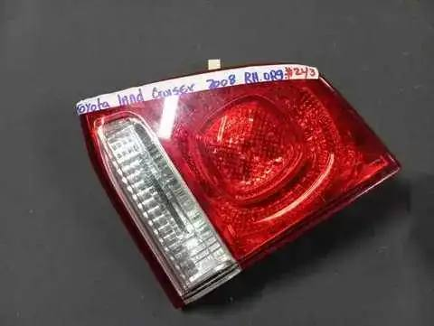
243Land Cruiser2008-11 · lado derecho · original 244Yaris2014-17 · lado derecho · genérico
244Yaris2014-17 · lado derecho · genérico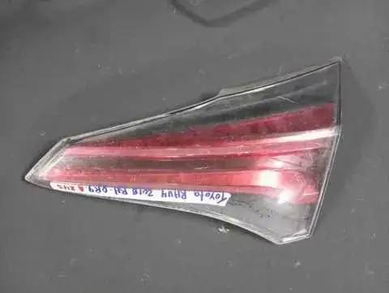
245RAV42016-18 · lado derecho · original 383Yaris2018-22 · lado derecho · genérico
383Yaris2018-22 · lado derecho · genérico 558Prado2010-13 · lado derecho · original
558Prado2010-13 · lado derecho · original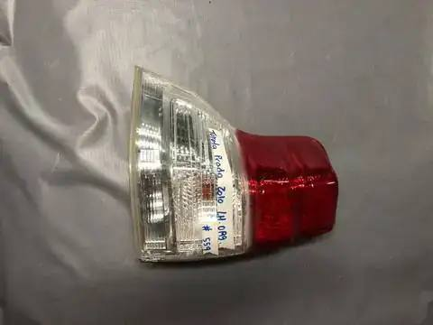
559Prado2010-13 · lado izquierdo · original 560Prado2010-13 · lado izquierdo · original
560Prado2010-13 · lado izquierdo · original LT013Hilux Revo2016-21 · lado derecho · genérico
LT013Hilux Revo2016-21 · lado derecho · genérico LT014Coaster BB40/502003-17 · lado derecho · original
LT014Coaster BB40/502003-17 · lado derecho · original LT015Yaris HB2018-22 · lado izquierdo · original
LT015Yaris HB2018-22 · lado izquierdo · original LT016Yaris HB2018-22 · lado derecho · original
LT016Yaris HB2018-22 · lado derecho · original LT017Yaris Sedán2014-17 · lado izquierdo · original
LT017Yaris Sedán2014-17 · lado izquierdo · original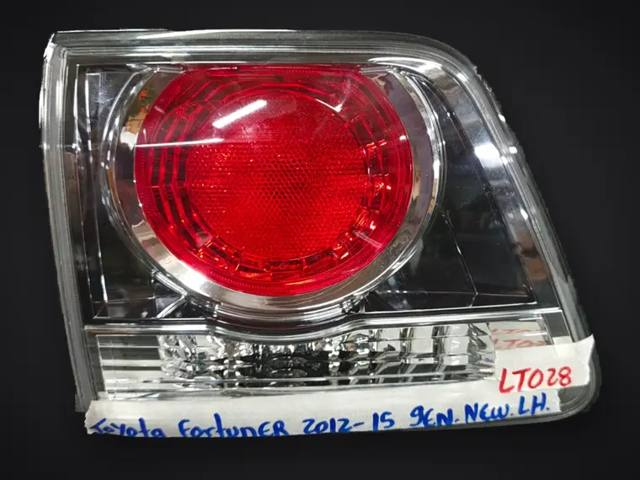
LT028Fortuner2012-15 · lado izquierdo · genérico nuevo LT029Yaris Sedán2000-05 · lado derecho · genérico nuevo
LT029Yaris Sedán2000-05 · lado derecho · genérico nuevo LT030Yaris2004-07 · lado derecho · genérico nuevo
LT030Yaris2004-07 · lado derecho · genérico nuevo LT031Yaris2004-07 · lado izquierdo · genérico nuevo
LT031Yaris2004-07 · lado izquierdo · genérico nuevo LT032Yaris2004-07 · lado derecho · genérico nuevo
LT032Yaris2004-07 · lado derecho · genérico nuevo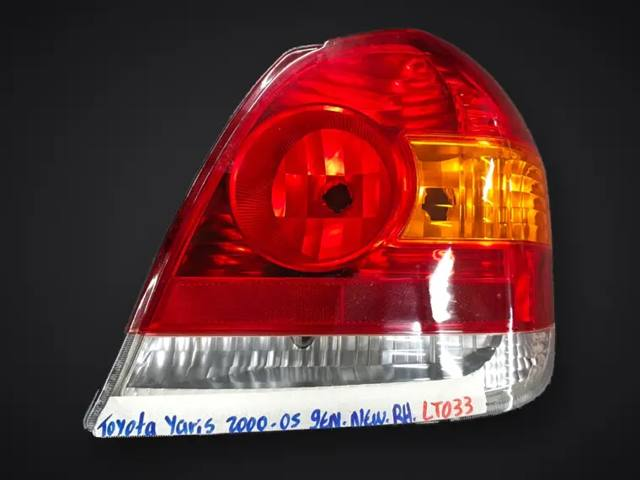
LT033Yaris2000-05 · lado derecho · genérico nuevo LT034Yaris2000-05 · lado derecho · genérico nuevo
LT034Yaris2000-05 · lado derecho · genérico nuevo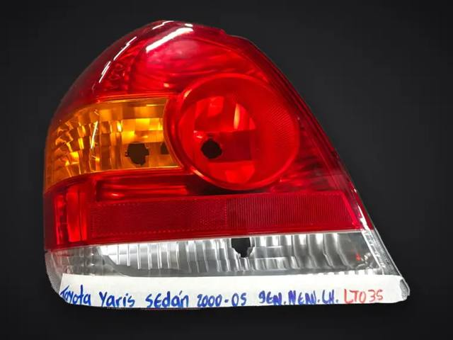
LT035Yaris Sedán2000-05 · lado izquierdo · genérico nuevo LT036Yaris Sedán2000-05 · lado derecho · genérico nuevo
LT036Yaris Sedán2000-05 · lado derecho · genérico nuevo LT037Rush2018-26 · lado izquierdo · original
LT037Rush2018-26 · lado izquierdo · original LT040Yaris2018-22 · lado izquierdo · original
LT040Yaris2018-22 · lado izquierdo · original LT041Yaris2018-22 · lado derecho · original
LT041Yaris2018-22 · lado derecho · originalDefensas traseras para Toyota 35
 DT094Agya2020-23 · original
DT094Agya2020-23 · original DT115Land Cruiser2009-12 · original
DT115Land Cruiser2009-12 · original DT117Agya2020 · original
DT117Agya2020 · original DT118Yaris Hatchback2006-13 · original
DT118Yaris Hatchback2006-13 · original DT119Land Cruiser2004-07 · original
DT119Land Cruiser2004-07 · original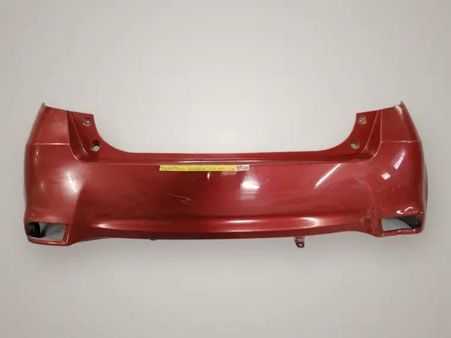
DT120Yaris Hatchback2014-17 · original DT121Yaris Hatchback2017-18 · original
DT121Yaris Hatchback2017-18 · original DT122Yaris2018-22 · original
DT122Yaris2018-22 · original DT124Yaris2023-26 · original
DT124Yaris2023-26 · original DT125Yaris2023-26 · original
DT125Yaris2023-26 · original DT126Yaris Sedan2023-26 · original
DT126Yaris Sedan2023-26 · original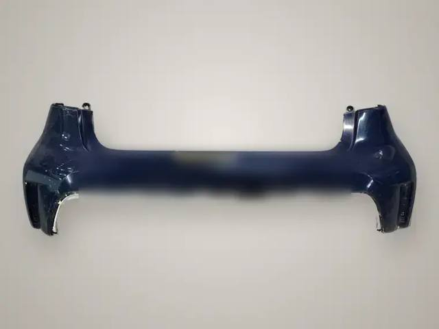
DT127Corolla2020-22 · original DT128Corolla2014-18 · original
DT128Corolla2014-18 · original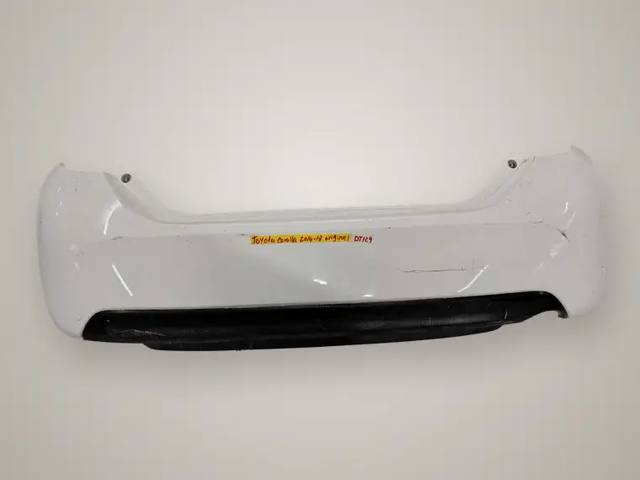
DT129Corolla2014-18 · original DT130Raize2023 · genérico
DT130Raize2023 · genérico DT131Fortuner2016-20 · original
DT131Fortuner2016-20 · original DT132Innova2016-20 · original
DT132Innova2016-20 · original DT133RAV42019-25 · original
DT133RAV42019-25 · original DT134Rush2018-26 · original
DT134Rush2018-26 · original DT135Rush2018-26 · original
DT135Rush2018-26 · original DT136Land Cruiser2016-21 · original
DT136Land Cruiser2016-21 · original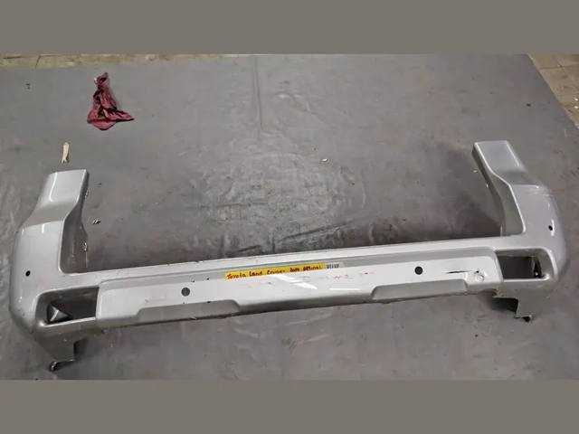
DT137Land Cruiser2012-15 · original DT138Land Cruiser2009-14 · original
DT138Land Cruiser2009-14 · original DT206Land Cruiser2006-09 · genérico
DT206Land Cruiser2006-09 · genérico DT219Land Cruiser Prado2014-17 · original
DT219Land Cruiser Prado2014-17 · original DT220Land Cruiser Prado2014-17 · original
DT220Land Cruiser Prado2014-17 · original DT229RAV42013-15 · original
DT229RAV42013-15 · original DT236RAV42013-15 · genéricoDT237RAV42013-15 · genérico
DT236RAV42013-15 · genéricoDT237RAV42013-15 · genérico DT238RAV42013-15 · genérico
DT238RAV42013-15 · genérico DT239Hiace2010-20 · original
DT239Hiace2010-20 · original DT240RAV42016-19 · original
DT240RAV42016-19 · original DT241RAV42016-19 · genérico
DT241RAV42016-19 · genérico DT244RAV42019-22 · original
DT244RAV42019-22 · original DT245Corolla Cross2021-25 · original
DT245Corolla Cross2021-25 · originalGuardafangos para Toyota 35
 GF023Prado2009-2015 · lado derecho · originalGF024Prado2009-2015 · lado izquierdo · originalGF025Yaris Hatchback2014-17 · lado izquierdo · genérico nuevo
GF023Prado2009-2015 · lado derecho · originalGF024Prado2009-2015 · lado izquierdo · originalGF025Yaris Hatchback2014-17 · lado izquierdo · genérico nuevo GF026RAV42016-18 · lado izquierdo · original
GF026RAV42016-18 · lado izquierdo · original GF027Yaris2017-2020 · lado izquierdo · original
GF027Yaris2017-2020 · lado izquierdo · original GF028RAV42014-2016 · lado izquierdo · genérico
GF028RAV42014-2016 · lado izquierdo · genérico GF029Hilux Revo2016-17 · lado derecho · genérico nuevo
GF029Hilux Revo2016-17 · lado derecho · genérico nuevo GF030RAV42019-25 · lado derecho · original
GF030RAV42019-25 · lado derecho · original GF031Corolla Cross2024 · lado derecho · original
GF031Corolla Cross2024 · lado derecho · original GF032RAV42019-25 · lado derecho · originalGF033Hilux2005-08 · lado izquierdo · genéricoGF034RAV42014-2018 · lado izquierdo · original
GF032RAV42019-25 · lado derecho · originalGF033Hilux2005-08 · lado izquierdo · genéricoGF034RAV42014-2018 · lado izquierdo · original GF036Prado2009-2015 · lado izquierdo · original
GF036Prado2009-2015 · lado izquierdo · original GF037RAV42019-25 · lado izquierdo · originalGF038Prado2009-2015 · lado izquierdo · original
GF037RAV42019-25 · lado izquierdo · originalGF038Prado2009-2015 · lado izquierdo · original GF039Land Cruiser2022-26 · lado izquierdo · original
GF039Land Cruiser2022-26 · lado izquierdo · original GF040Prado2009-2015 · lado derecho · original
GF040Prado2009-2015 · lado derecho · original GF041RAV42018-2024 · lado izquierdo · originalGF042Yaris2013-2017 · lado derecho · genérico nuevoGF117Land Cruiser Prado2003-09 · lado derecho · original
GF041RAV42018-2024 · lado izquierdo · originalGF042Yaris2013-2017 · lado derecho · genérico nuevoGF117Land Cruiser Prado2003-09 · lado derecho · original GF118Land Cruiser Prado2003-09 · lado derecho · original
GF118Land Cruiser Prado2003-09 · lado derecho · original GF119Land Cruiser Prado2003-09 · lado derecho
GF119Land Cruiser Prado2003-09 · lado derecho GF120Land Cruiser Prado2003-09 · lado izquierdo · original
GF120Land Cruiser Prado2003-09 · lado izquierdo · original GF121Land Cruiser Prado2003-09 · lado izquierdo · original
GF121Land Cruiser Prado2003-09 · lado izquierdo · original GF122Land Cruiser Prado2003-09 · lado izquierdo · original
GF122Land Cruiser Prado2003-09 · lado izquierdo · original GF123Land Cruiser Prado2003-09 · lado derecho · originalGF124Land Cruiser Prado2003-09 · lado derecho · original
GF123Land Cruiser Prado2003-09 · lado derecho · originalGF124Land Cruiser Prado2003-09 · lado derecho · original GF125Land Cruiser Prado2003-09 · lado izquierdo · originalGF126Land Cruiser Prado2003-09 · lado izquierdo · original
GF125Land Cruiser Prado2003-09 · lado izquierdo · originalGF126Land Cruiser Prado2003-09 · lado izquierdo · original GF127Land Cruiser Prado2003-09 · lado izquierdo · originalGF128Land Cruiser Prado2010-2018 · lado izquierdo · original
GF127Land Cruiser Prado2003-09 · lado izquierdo · originalGF128Land Cruiser Prado2010-2018 · lado izquierdo · original GF129Land Cruiser Prado2010-2018 · lado izquierdo · original
GF129Land Cruiser Prado2010-2018 · lado izquierdo · original GF130Land Cruiser Prado2010-2018 · lado izquierdo · original
GF130Land Cruiser Prado2010-2018 · lado izquierdo · original GF140Hilux2016-2025 · lado izquierdo · original
GF140Hilux2016-2025 · lado izquierdo · original GF146Land Cruiser2016-21 · lado derecho · original
GF146Land Cruiser2016-21 · lado derecho · originalCovers de halógena para Toyota 33
 CH004RAV42015-17 · lado izquierdo · original
CH004RAV42015-17 · lado izquierdo · original CH012RAV42016-18 · lado izquierdo · original
CH012RAV42016-18 · lado izquierdo · original CH013RAV42016-18 · lado derecho · originalCH023Yaris2014-17 · lado izquierdo · originalCH024Yaris2014-17 · lado derecho · original
CH013RAV42016-18 · lado derecho · originalCH023Yaris2014-17 · lado izquierdo · originalCH024Yaris2014-17 · lado derecho · original CH026RAV42012-15 · lado izquierdo · original
CH026RAV42012-15 · lado izquierdo · original CH027RAV42012-15 · lado derecho · original
CH027RAV42012-15 · lado derecho · original CH028Yaris2014-17 · lado derecho · original
CH028Yaris2014-17 · lado derecho · original CH034RAV42019-25 · lado izquierdo · original
CH034RAV42019-25 · lado izquierdo · original CH035RAV42019-25 · lado derecho · original
CH035RAV42019-25 · lado derecho · original CH061RAV42013-15 · lado derecho · original
CH061RAV42013-15 · lado derecho · original CH064Raize2022-25 · lado izquierdo
CH064Raize2022-25 · lado izquierdo CH067RAV42008-11 · lado derecho · originalCH068RAV42008-11 · lado derecho · original
CH067RAV42008-11 · lado derecho · originalCH068RAV42008-11 · lado derecho · original CH069RAV42016-18 · lado izquierdo · original
CH069RAV42016-18 · lado izquierdo · original CH070RAV42016-18 · lado izquierdo · originalCH087RAV42016-18 · lado izquierdo
CH070RAV42016-18 · lado izquierdo · originalCH087RAV42016-18 · lado izquierdo CH089Yaris2018-22 · lado derecho · original
CH089Yaris2018-22 · lado derecho · original CH090Fortuner2012-15 · lado izquierdo · original
CH090Fortuner2012-15 · lado izquierdo · original CH091Fortuner Dubai2014-20 · lado izquierdo · original
CH091Fortuner Dubai2014-20 · lado izquierdo · original CH092Fortuner Dubai2014-20 · lado izquierdo · originalCH099Rush2018-26 · lado derecho
CH092Fortuner Dubai2014-20 · lado izquierdo · originalCH099Rush2018-26 · lado derecho CH128Hilux2015-20 · lado izquierdo · original
CH128Hilux2015-20 · lado izquierdo · original CH129Land Cruiser2010-13 · lado derecho · originalCH134Yaris2012-14 · lado izquierdo · original
CH129Land Cruiser2010-13 · lado derecho · originalCH134Yaris2012-14 · lado izquierdo · original CH142Land Cruiser Prado2017-23 · lado izquierdo · originalCH143Land Cruiser Prado2017-23 · lado izquierdo
CH142Land Cruiser Prado2017-23 · lado izquierdo · originalCH143Land Cruiser Prado2017-23 · lado izquierdo CH1464Runner2014-24 · lado derecho · original
CH1464Runner2014-24 · lado derecho · original CH147Hilux2021-26 · lado izquierdo · original nuevoCH110Yaris2019-23 · lado izquierdo · originalCH1554Runner2016-20 · lado izquierdo · original
CH147Hilux2021-26 · lado izquierdo · original nuevoCH110Yaris2019-23 · lado izquierdo · originalCH1554Runner2016-20 · lado izquierdo · original CH168Agya2017-19 · lado derecho · original
CH168Agya2017-19 · lado derecho · original CH171Corolla2016-19 · lado derecho · original
CH171Corolla2016-19 · lado derecho · originalDefensas delanteras para Toyota 32
 726Fortuner2016-20 · original
726Fortuner2016-20 · original 727Hilux Revo2016-20 · original nuevo
727Hilux Revo2016-20 · original nuevo 728Hilux Revo2016-20 · original
728Hilux Revo2016-20 · original 729Hilux Revo2016-20 · original755Hilux2009-11 · original
729Hilux Revo2016-20 · original755Hilux2009-11 · original 756Fortuner2012-16 · original
756Fortuner2012-16 · original 758Fortuner2014-20 · original759Prado2010-13 · original
758Fortuner2014-20 · original759Prado2010-13 · original 760Prado2018-23 · original
760Prado2018-23 · original 761Prado2018-23 · genérico
761Prado2018-23 · genérico 762Prado2010-15 · original
762Prado2010-15 · original 763RAV42013-15 · original
763RAV42013-15 · original 764RAV42013-15 · genérico
764RAV42013-15 · genérico 765RAV42013-15 · original
765RAV42013-15 · original 766RAV42016-19 · genérico
766RAV42016-19 · genérico 767RAV42016-19 · original
767RAV42016-19 · original 768RAV42019-25 · original
768RAV42019-25 · original 769RAV42019-25 · original
769RAV42019-25 · original 770Land Cruiser2015-19 · original
770Land Cruiser2015-19 · original 771Land Cruiser2015-18 · original
771Land Cruiser2015-18 · original 774Raize2022-24 · genérico
774Raize2022-24 · genérico 778Rush2018-26 · original
778Rush2018-26 · original 779Corolla2017-19 · genérico
779Corolla2017-19 · genérico 780Corolla2020-22 · genérico
780Corolla2020-22 · genérico 781Corolla2011-13 · original
781Corolla2011-13 · original 782Corolla2011-13 · genérico784Corolla2017-19 · original
782Corolla2011-13 · genérico784Corolla2017-19 · original 785Yaris2014-19 · original788Corolla2014-16 · original
785Yaris2014-19 · original788Corolla2014-16 · original 7894Runner2014-24 · original
7894Runner2014-24 · original 790Yaris2023-26 · original
790Yaris2023-26 · original 870Fortuner2012-15 · original
870Fortuner2012-15 · originalFlares para Toyota 26
 FL023Corolla2023-26 · lado izquierdo · original
FL023Corolla2023-26 · lado izquierdo · original FL026RAV42015-18 · lado izquierdo · originalFL036Rush2018-26 · lado derecho · original
FL026RAV42015-18 · lado izquierdo · originalFL036Rush2018-26 · lado derecho · original FL041Rush2018-26 · lado izquierdo · original
FL041Rush2018-26 · lado izquierdo · original FL042Rush2018-26 · lado izquierdo · originalFL047Hilux Vigo2012-15 · lado izquierdo · originalFL048Land Cruiser2006-12 · lado derecho · originalFL061Rush2018-26 · lado derecho · originalFL076RAV42019-25 · lado izquierdo · originalFL081Innova2024 · lado izquierdo · original
FL042Rush2018-26 · lado izquierdo · originalFL047Hilux Vigo2012-15 · lado izquierdo · originalFL048Land Cruiser2006-12 · lado derecho · originalFL061Rush2018-26 · lado derecho · originalFL076RAV42019-25 · lado izquierdo · originalFL081Innova2024 · lado izquierdo · original FL134RAV42019-25 · lado derecho · originalFL136Hilux2005-11 · lado izquierdo · genérico
FL134RAV42019-25 · lado derecho · originalFL136Hilux2005-11 · lado izquierdo · genérico FL135RAV42019-25 · lado derecho · originalFL133RAV42015-18 · lado izquierdo · original
FL135RAV42019-25 · lado derecho · originalFL133RAV42015-18 · lado izquierdo · original FL129RAV42019-25 · lado izquierdo · originalFL140Hilux2005-11 · lado derecho · genéricoFL148RAV42019-25 · lado izquierdo · original
FL129RAV42019-25 · lado izquierdo · originalFL140Hilux2005-11 · lado derecho · genéricoFL148RAV42019-25 · lado izquierdo · original FL130RAV42019-25 · lado derecho · originalFL160SW42016-20 · lado izquierdo · original
FL130RAV42019-25 · lado derecho · originalFL160SW42016-20 · lado izquierdo · original FL106Rush2018-26 · lado derecho · original
FL106Rush2018-26 · lado derecho · original FL119Innova2025 · lado izquierdo · original
FL119Innova2025 · lado izquierdo · original FL171Rush2006-16 · lado izquierdo
FL171Rush2006-16 · lado izquierdo FL1774Runner2010-24 · lado derecho
FL1774Runner2010-24 · lado derecho FL180RAV42013-18 · lado derecho
FL180RAV42013-18 · lado derecho FL181Rush2018-26 · lado izquierdo · original
FL181Rush2018-26 · lado izquierdo · originalCubrepolvos para Toyota 22
 CP004RAV42013-18 · lado derecho · genéricoCP007Fortuner2005-15 · lado izquierdo · genérico
CP004RAV42013-18 · lado derecho · genéricoCP007Fortuner2005-15 · lado izquierdo · genérico CP009Hilux2016-26 · lado izquierdo · original
CP009Hilux2016-26 · lado izquierdo · original CP012Corolla2020-26 · lado derecho · originalCP015Yaris2014-22 · lado derecho · original
CP012Corolla2020-26 · lado derecho · originalCP015Yaris2014-22 · lado derecho · original CP027RAV42013-18 · lado izquierdo · genérico
CP027RAV42013-18 · lado izquierdo · genérico CP029RAV42013-18 · lado izquierdo · genéricoCP0494Runner2010-24 · lado izquierdo · original
CP029RAV42013-18 · lado izquierdo · genéricoCP0494Runner2010-24 · lado izquierdo · original CP052RAV42019-25 · lado derecho · genérico
CP052RAV42019-25 · lado derecho · genérico CP054RAV42019-25 · lado derecho · original
CP054RAV42019-25 · lado derecho · original CP059RAV42013-18 · lado izquierdo · original
CP059RAV42013-18 · lado izquierdo · original CP068Yaris2014-22 · lado izquierdo · genérico
CP068Yaris2014-22 · lado izquierdo · genérico CP072Yaris2014-22 · lado izquierdo · genérico
CP072Yaris2014-22 · lado izquierdo · genérico CP073Yaris2014-22 · lado izquierdo · genérico
CP073Yaris2014-22 · lado izquierdo · genérico CP086RAV42013-18 · lado izquierdo
CP086RAV42013-18 · lado izquierdo CP087RAV42013-18 · lado derecho · genérico
CP087RAV42013-18 · lado derecho · genérico CP084Hilux2015-2020 · genérico
CP084Hilux2015-2020 · genérico CP082Yaris2014-22 · lado derecho · genérico
CP082Yaris2014-22 · lado derecho · genérico CP076Yaris Sedán2014-22 · lado izquierdo · genéricoCP074Hilux2016-26 · lado izquierdo · genérico
CP076Yaris Sedán2014-22 · lado izquierdo · genéricoCP074Hilux2016-26 · lado izquierdo · genérico CP075Yaris Sedán2014-22 · lado izquierdo
CP075Yaris Sedán2014-22 · lado izquierdo CP0934Runner2010-24 · lado izquierdo · original nuevo
CP0934Runner2010-24 · lado izquierdo · original nuevoCapós para Toyota 16
 TM008Corolla2017-19 · original
TM008Corolla2017-19 · original TM011Hilux2005-11 · original
TM011Hilux2005-11 · original TM013Prado2018-23 · original
TM013Prado2018-23 · original TM014Prado2018-23 · original
TM014Prado2018-23 · original TM018Yaris2014-17 · genérico
TM018Yaris2014-17 · genérico TM024Yaris2014-17 · originalTM031Hilux Revo2016-24 · genérico
TM024Yaris2014-17 · originalTM031Hilux Revo2016-24 · genérico TM032Land Cruiser Prado 1502015-24 · original
TM032Land Cruiser Prado 1502015-24 · original TM040Corolla2020-22 · originalTM041Prado2018-23 · original
TM040Corolla2020-22 · originalTM041Prado2018-23 · original TM042Hilux2009-11 · genérico
TM042Hilux2009-11 · genérico TM055Prado2018-23 · original
TM055Prado2018-23 · original TM056Hilux2016-24 · originalTM061Hilux2020-23 · original
TM056Hilux2016-24 · originalTM061Hilux2020-23 · original TM069Yaris2017-20 · original
TM069Yaris2017-20 · originalRetrovisores para Toyota 14
 RV003Hiace2004-06 · lado derecho · genérico
RV003Hiace2004-06 · lado derecho · genérico RV004Corolla2014-20 · lado derecho · genérico
RV004Corolla2014-20 · lado derecho · genérico RV008Land Cruiser2008-11 · lado izquierdo · genérico
RV008Land Cruiser2008-11 · lado izquierdo · genérico RV010Highlander2020-26 · lado izquierdo · original
RV010Highlander2020-26 · lado izquierdo · original RV018Hilux2016-19 · lado izquierdo
RV018Hilux2016-19 · lado izquierdo RV023Rush2018-26 · lado derecho · originalRV026Hilux / Innova2012-19 · original
RV023Rush2018-26 · lado derecho · originalRV026Hilux / Innova2012-19 · original RV029RAV42019-25 · lado derecho
RV029RAV42019-25 · lado derecho RV032Land Cruiser2012-15 · originalRV033Corolla2019-22 · lado izquierdo · original
RV032Land Cruiser2012-15 · originalRV033Corolla2019-22 · lado izquierdo · original RV040Yaris2006-13 · lado izquierdo
RV040Yaris2006-13 · lado izquierdo RV041Yaris2006-13 · lado izquierdoRV046RAV42016-18 · lado derecho · original
RV041Yaris2006-13 · lado izquierdoRV046RAV42016-18 · lado derecho · original RV053Yaris2017-22 · lado izquierdo
RV053Yaris2017-22 · lado izquierdoHalógenas y faros antiniebla para Toyota 14
 HA035Corolla1993-97 · lado derecho · nuevo
HA035Corolla1993-97 · lado derecho · nuevo HA043Hilux / Fortuner2005-11 · lado izquierdo · original
HA043Hilux / Fortuner2005-11 · lado izquierdo · original HA052Corolla2017-19 · lado izquierdo · nuevoHA070RAV42006-08 · lado derecho · original
HA052Corolla2017-19 · lado izquierdo · nuevoHA070RAV42006-08 · lado derecho · original HA073Fortuner2005-12 · lado derecho
HA073Fortuner2005-12 · lado derecho HA0784Runner / Prius2010-15 · lado derecho · originalHA080Avanza2012-25 · lado derecho
HA0784Runner / Prius2010-15 · lado derecho · originalHA080Avanza2012-25 · lado derecho HA081RAV42014-20 · lado derecho
HA081RAV42014-20 · lado derecho HA087Hilux2016-19 · lado derecho
HA087Hilux2016-19 · lado derecho HA088Hilux2016-19 · lado izquierdo
HA088Hilux2016-19 · lado izquierdo HA091Prius2010 · lado izquierdo
HA091Prius2010 · lado izquierdo HA096Land Cruiser2012-21 · lado derecho · original nuevo
HA096Land Cruiser2012-21 · lado derecho · original nuevo HA098Hilux Vigo2006-11 · lado izquierdo
HA098Hilux Vigo2006-11 · lado izquierdoTapas superiores de radiador para Toyota 14
 TA002Yaris 1.52014-19 · original
TA002Yaris 1.52014-19 · original TA023Yaris Sedán2014-19TA027RAV42013-18
TA023Yaris Sedán2014-19TA027RAV42013-18 TA029Corolla2020-24 · original
TA029Corolla2020-24 · original TA031Yaris2014-19 · genéricoTA035RAV42016-18 · genérico
TA031Yaris2014-19 · genéricoTA035RAV42016-18 · genérico TA038Yaris2018-20 · original
TA038Yaris2018-20 · original TA043RAV42016-18 · genérico
TA043RAV42016-18 · genérico TA008Hilux2016-20 · original
TA008Hilux2016-20 · original TA010Yarisoriginal
TA010Yarisoriginal TA016Land Cruiser2014-18 · original
TA016Land Cruiser2014-18 · original TA017Yaris 1.52014-19 · original
TA017Yaris 1.52014-19 · original TA018Yaris2014-19 · original
TA018Yaris2014-19 · original TA048Corolla2020-22 · genérico nuevo
TA048Corolla2020-22 · genérico nuevoPuertas para Toyota 12
 PD016Yaris2014-22 · lado izquierdo · original
PD016Yaris2014-22 · lado izquierdo · original PT036Yaris Hatchback2014-22 · lado izquierdoPD015Yaris2014-22 · lado derecho · genérico nuevo
PT036Yaris Hatchback2014-22 · lado izquierdoPD015Yaris2014-22 · lado derecho · genérico nuevo PT035RAV42019-25 · lado derecho · original
PT035RAV42019-25 · lado derecho · original PD014Innova2025 · lado izquierdo · original
PD014Innova2025 · lado izquierdo · original PT032Corolla Cross2021-2024 · lado derecho · original
PT032Corolla Cross2021-2024 · lado derecho · original PT034Corolla Cross2023-2026 · lado derecho · original
PT034Corolla Cross2023-2026 · lado derecho · original PT033Yaris2006-13 · lado izquierdo · original nuevo
PT033Yaris2006-13 · lado izquierdo · original nuevo PT031Raize2023 · lado derechoPT030Innova2021-2024 · lado izquierdo · originalPT029Yaris2014-22 · lado izquierdo · original
PT031Raize2023 · lado derechoPT030Innova2021-2024 · lado izquierdo · originalPT029Yaris2014-22 · lado izquierdo · original PT028Hilux Vigo2005-15 · lado izquierdo · genérico nuevo
PT028Hilux Vigo2005-15 · lado izquierdo · genérico nuevoRefuerzos delanteros para Toyota 12
 R048RAV42006-12 · originalR049RAV42013-18 · original
R048RAV42006-12 · originalR049RAV42013-18 · original R050Corolla2014-17 · original
R050Corolla2014-17 · original R051Hiace2005-20 · originalR052RAV42019-24 · original
R051Hiace2005-20 · originalR052RAV42019-24 · original R053RAV42013-18 · original
R053RAV42013-18 · original R055Yaris2018-20 · original nuevo
R055Yaris2018-20 · original nuevo R057Hilux Revo / Fortuner2015-22 · originalR063Corolla2019-25 · original
R057Hilux Revo / Fortuner2015-22 · originalR063Corolla2019-25 · original R066RAV42013-18 · original nuevo
R066RAV42013-18 · original nuevo R098Hilux Revo / Fortuner2015-21 · original
R098Hilux Revo / Fortuner2015-21 · original R099Hilux Revo / Fortuner2015-21 · original
R099Hilux Revo / Fortuner2015-21 · originalMarcos de radiador para Toyota 10
 MR028Hilux2016-26 · genérico
MR028Hilux2016-26 · genérico MR029Hilux Vigo2005-15 · genérico
MR029Hilux Vigo2005-15 · genérico MR037Yaris2014-22 · genérico nuevo
MR037Yaris2014-22 · genérico nuevo MR038RAV42013-18 · original nuevo
MR038RAV42013-18 · original nuevo MR039RAV42013-18 · genéricoMR040Yaris2014-22 · genérico
MR039RAV42013-18 · genéricoMR040Yaris2014-22 · genérico MR041RAV42013-18 · genéricoMR061Tercel1995-99 · originalMR062Hilux2016-26 · genérico
MR041RAV42013-18 · genéricoMR061Tercel1995-99 · originalMR062Hilux2016-26 · genérico MR063Corolla2008-13 · original
MR063Corolla2008-13 · originalVentiladores para Toyota 10
 VR001Yaris2007-18VR002Yaris2007-18
VR001Yaris2007-18VR002Yaris2007-18 VR003Yaris2007-18
VR003Yaris2007-18 VR004Yaris2007-18
VR004Yaris2007-18 VR005Yaris2007-18
VR005Yaris2007-18 VR006Yaris2007-18
VR006Yaris2007-18 VR007Yaris2007-18
VR007Yaris2007-18 VR008Yaris2007-18
VR008Yaris2007-18 VR009RAV42013-18 · genérico nuevo
VR009RAV42013-18 · genérico nuevo VR010RAV42013-18 · genérico nuevo
VR010RAV42013-18 · genérico nuevoEstribos y rolling boards para Toyota 9
 RB011Innova2020-2023 · lado izquierdo · original nuevo
RB011Innova2020-2023 · lado izquierdo · original nuevo RB015Rush2018-26 · lado derecho
RB015Rush2018-26 · lado derecho RB026Hilux2016-2021 · lado derecho · original
RB026Hilux2016-2021 · lado derecho · original RB027Hilux2016-2021 · lado derechoRB028Hilux2016-2021 · lado izquierdo · original
RB027Hilux2016-2021 · lado derechoRB028Hilux2016-2021 · lado izquierdo · original RB029Hilux2012-15
RB029Hilux2012-15 RB035Land Cruiser Prado2009-2023 · lado izquierdo · original
RB035Land Cruiser Prado2009-2023 · lado izquierdo · original RB046Yaris Cross2021-26 · lado izquierdo · original
RB046Yaris Cross2021-26 · lado izquierdo · original RB034Hilux Sencillo (una Cabina)2016-25 · lado izquierdo
RB034Hilux Sencillo (una Cabina)2016-25 · lado izquierdoDefensas delanteras inferiores para Toyota 7
 DDI012Fortuner / Hilux2021-25 · original
DDI012Fortuner / Hilux2021-25 · original DDI039Raize2021-26
DDI039Raize2021-26 DDI043Rush2018-26 · original
DDI043Rush2018-26 · original DDI027RAV42013-16
DDI027RAV42013-16 DDI044RAV42019-24 · original
DDI044RAV42019-24 · original DDI047Raize2021-25
DDI047Raize2021-25 DDI050RAV42019-20 · original
DDI050RAV42019-20 · originalAccesorios nuevos para Toyota 5
 EN002Tapa DE Rin Land Cruiser Prado Negra2010-23
EN002Tapa DE Rin Land Cruiser Prado Negra2010-23 EN003Tapa DE Rin Hilux Gris2016-26
EN003Tapa DE Rin Hilux Gris2016-26 EN004Tapa DE Rin Fortuner / 4Runner Gris2016-26
EN004Tapa DE Rin Fortuner / 4Runner Gris2016-26 EN005Tapa DE Rin Fortuner / 4Runner Negra2016-26
EN005Tapa DE Rin Fortuner / 4Runner Negra2016-26Tapas de baúl para Toyota 5
 TB030Land Cruiser2008-21
TB030Land Cruiser2008-21 TB041RAV42016-18 · original
TB041RAV42016-18 · original TB043Innova2016-23 · original
TB043Innova2016-23 · original TB044RAV42019-25 · originalTB045RAV42016-18 · original
TB044RAV42019-25 · originalTB045RAV42016-18 · originalVidrios para Toyota 5
 VA016RAV42006-12 · genérico
VA016RAV42006-12 · genérico VA026Yaris2017-22 · lado izquierdo · original
VA026Yaris2017-22 · lado izquierdo · original VA031Corolla2009-13 · genérico
VA031Corolla2009-13 · genérico VA044Hiace2005-18 · lado izquierdo · original
VA044Hiace2005-18 · lado izquierdo · originalMolduras traseras para Toyota 4
 599Corolla2003-07 · original
599Corolla2003-07 · original MLT004Hilux2016-2024 · lado izquierdo · original
MLT004Hilux2016-2024 · lado izquierdo · original MLT015RAV42016-18 · original nuevo
MLT015RAV42016-18 · original nuevo MLT018Land Cruiser Prado 150 (moldura DE Cajuela)2009-26 · nuevo
MLT018Land Cruiser Prado 150 (moldura DE Cajuela)2009-26 · nuevoExtensiones de defensa trasera para Toyota 4
 EDT008Corolla Cross2024-26 · lado izquierdo · original
EDT008Corolla Cross2024-26 · lado izquierdo · original EDT010Rush2018-26 · lado izquierdo · original
EDT010Rush2018-26 · lado izquierdo · originalDefensas traseras inferiores para Toyota 3
 DTI040Yaris Cross
DTI040Yaris CrossGuardafangos traseros para Toyota 3
 GFT014Yaris Sedan2019-23 · lado izquierdo
GFT014Yaris Sedan2019-23 · lado izquierdo PCh008RAV4
PCh008RAV4 CR002RAV4
CR002RAV4 DA001Hiace
DA001Hiace